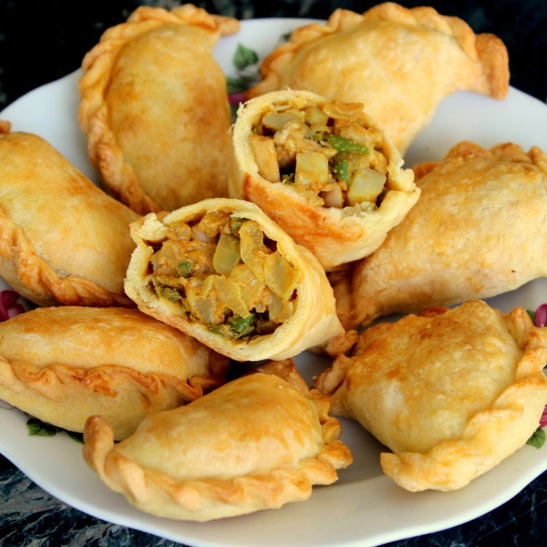

Home >> Malaysia >> Curry Puff

Curry Puff Curry puffs come with a variety of fillings, including eggs, meat, root vegetables, onions, and even sweet variants. The curry filling is made to a thick consistency, to stop it leaking out when frying.
History of Curry Puff
The name karipap comes from a mixture of the Malay word for curry, “kari,” and from the Hokkien “pap,” which means to bubble, blister or puff. It's been likened to the British Cornish pasty, the Portuguese empanada, and the Indian samosa, all of which were introduced to the Malaysian peninsula and maritime Southeast Asia during the colonial period.
Ingredient
- Neutral oil: like vegetable oil, avocado oil or any scentless oil with a high smoke point.
- Chicken thighs: recommend thigh meat as it's juicier and more flavourful than chicken breast meat
- Potatoes: yellow russet or yukon gold are good potatoes for this recipe
- Small onion
- Curry powder
- Turmeric powder
- Salt
- Bay leaves
- All-purpose flour: this recipe has not been tested with gluten free flour
- Salt
- Water
- Hot neutral oil
Filling:
Wrapper:
Instruction
- Cook Filling
- Heat 1 teaspoon of vegetable oil in a large pan on medium heat.
- Fry your chicken until 80% cooked.
- Add onions and potatoes, followed by curry powder, salt, turmeric (optional) and bay leaves.
- Cover and let this cook until potatoes are forking tender.
- Remove filling from pan and let it cool completely.
- Create Dough
- In a large mixing bowl, add all-purpose flour and salt. Whisk together. Make a well in the middle.
- In a small saucepan, heat ⅓ cup + 3 tablespoon vegetable oil on high heat.
- Place a chopstick or a wooden stick to check if the oil bubbles.
- Once it bubbles, carefully pour the hot oil into the flour well. Allow this to bubble for 1 minute.
- Then mix the flour and oil together. Add water and mix everything together with your hands and knead it together. You should form a very oiled ball of dough.
- Divide Dough & Roll into Balls
- On a floured surface, roll your dough into a long log.
- Slice the tube of dough into 26 pieces.
- Roll each piece into a ball.